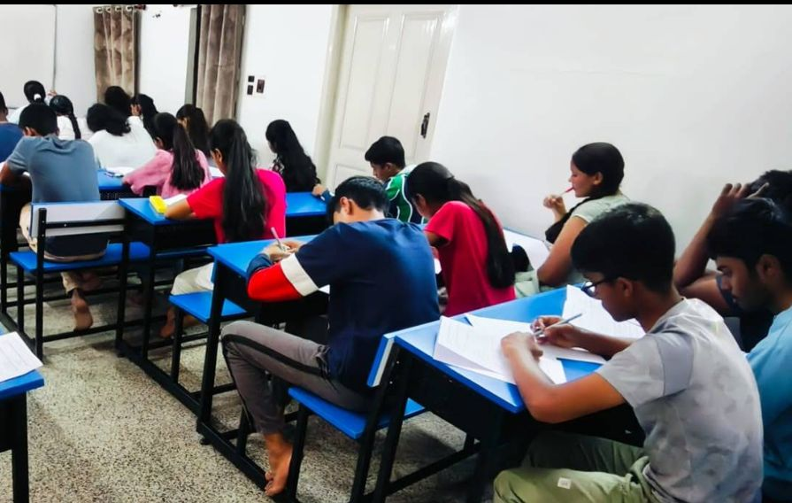
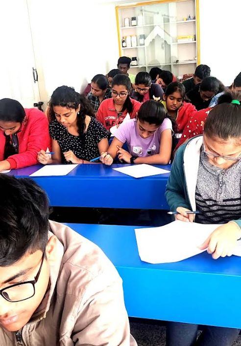

NEET · JEE · CET coaching in small batches. We find the chapters where each student loses marks, and fix them one by one. Foundation of success since 2013.

Live test dayMost classes run at one speed for everyone. Root Classes diagnoses each student on day one and builds the plan around their weak chapters.
Physics, Chemistry and Biology with NCERT-first revision and OMR practice.
Concept clarity first, then speed. Maths, Physics and Chemistry problem-solving drills.
Karnataka syllabus aligned preparation with timed tests and counselling guidance.

Every student's weak chapters are mapped before the first class.
Teachers know each student by name, so doubts are cleared in class.
Short tests keep revision constant and show progress clearly.
Marks, rank and chapter-wise gaps shared with parents.